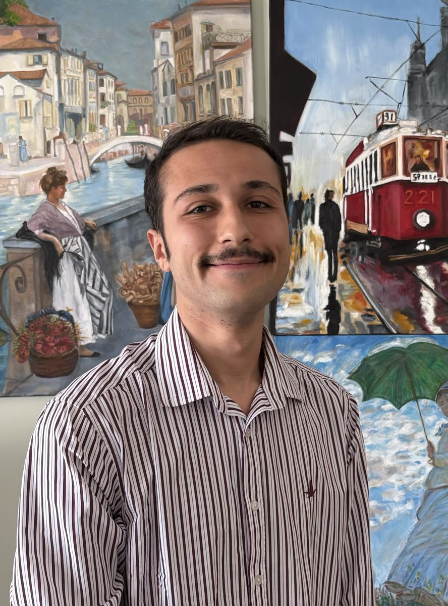

Computational social scientist in Istanbul
Prepared for CREST CSS (sociology and computational social science at CREST, Institut Polytechnique de Paris). PhD application, entry autumn 2027.

I study systems that fail unevenly. Mostly cities: who gains from a new park, who can reach a hospital, whose streets are cut off when the ground shakes. Lately I also ask how the state talks about what it builds.
Where I am
- MA in Computational Social SciencesKoç University · expected June 2027
- Research assistantİstanbul Bilgi University · since March 2026
- BA in EconomicsGalatasaray University · 2025
- Licence in EconomicsParis 1 Panthéon-Sorbonne · dual degree, with an Erasmus+ semester in Lille
- LanguagesTurkish (native) · English, French (fluent)
A toy city split by a strait and joined by three bridges. Click or tap anywhere on it to set off an earthquake there. Yellow lines are bridges, yellow dots are intersections cut off from the rest of the city. It is a drawing, not data.
Pick a station to see the work that stops there.
Also on the line
How are infrastructure projects presented politically, and what happens in the neighbourhoods around them? I want to trace the first with text analysis at scale and link it to the second with spatial and causal designs.
This site is set up like a small magazine. Each project is a stop on one line, and the issue number goes up when the work moves on.
My questions come from political economy and urban studies, and I read them through social theory as much as through data. The methods change with the question. The question mostly doesn't: when a shock arrives, whether a crisis, an earthquake, or a new park, who absorbs it?